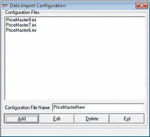

The data import functionality uses configuration settings stored in .ini files. You can specify the format and contents of the flat files in .ini files. Separate .ini files are used to configure data import into each table in Shoper 9 HO.
How to reach: Housekeeping > Back-end Data > Configure
The Data Import Configuration window is displayed. The window displays the list of all file names with extension .ini saved in the inilookup.ini file. The inilookup.ini file is stored in the Shoper 9 application folder. You may edit or delete any of the files listed or create new .ini files.

Configuration File Name: Enter the file name to be created.
Note: Data for import is taken from ASCII or text files. The configuration files are used to do the necessary configuration for import.